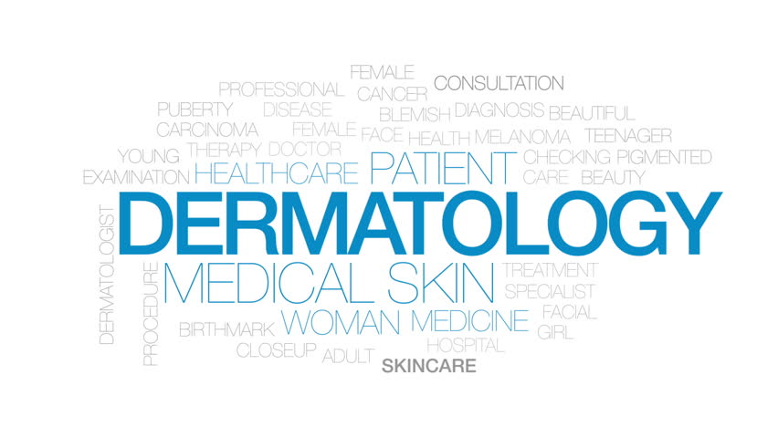

LifeCare Hospital
>>Department of Dermatology<<
Introduction:
The department was set up in1950s under the Chairmanship of Late Prof K C Kandhari,
and subsequently iconic personalities
like Late Prof LK Bhutani (1974-1996), Prof JS Pasricha ( 1996-8)
and Prof RK Pandhi (1998-2001) headed the department.
Prof Sanjoli Gupta has been the head of
the department since May, 2001.Prof KC Kandhari and Prof LK Bhutani laid the
basic foundation of
the department and started Dermatology training module which is still being followed with modifications
as per
changing requirements.The department has grown up in its size since then and has contributed
remarkably to the Dermatology specialty.The department
has introduced many new
innovative treatment methods like Dexametasone cyclophoshphamide pulse therapy and oral mini pulse and
investigative procedures for allergic skin diseases.
Under Prof Sanjoli Gupta, the department has been expanded and modernized and has acquired four
lasers and expanded
dermatosurgery,phototherapy and started research lab for dermatology and restarted PhD
in dermatology. Faculty has been
trained to specilaise in pediatric dermatology and dermatopathology.
Currently it has 11 faculty members, provides postgraduate training to 17 students, and research and training experience to
8 senior residents. Also, the department has 3 Ph D scholars doing research work in different areas of Dermatology.
The department also provides various fellowships and training programs in bullous dermatosis, dermatosurgery and
lasers, general dermatology and STIs.
Every year around 50,000 patients visit the outpatient department and around 800 patients are admitted in the indoor department
and much larger number in day care for pulse therapy. The department provides the state of the art treatment in all domains of
Dermatology and is equipped with the most modern equipments.
A brief Introduction of Head Department of Dermatology and Venereology-
NAME DR. SANJOLI GUPTA ||E-mail:aiimsvks@yahoo.com
Area of Interest :Vitiligo, Psoriasis, alopecia, contact dermatitis, drug eruptions
Qualifications and Fellowship-
MD Dermatology and Venereology, AIIMS, New Delhi, May 1982
One year “Leprosy Research Fellowship” 1992-93
Fellow National Academy of Medical Sciences (FAMS)
Fellow Royal College of Physicians (FRCP) London
International Member American Academy of Dermatology
Member European Academy of Dermatology and Venereology